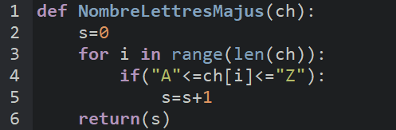

En Python, il n’y a pas de différence entre une procédure et une fonction. Elles sont en fait très similaires et fonctionnent comme un mélange des deux.
La syntaxe:

On peut ajouter une instruction return si on veut retourner une valeur, ou ne rien mettre du tout si ce n’est pas nécessaire.
Il n’est pas nécessaire de déclarer les types des variables ni le type du retour.
Et surtout, il n’y a pas de TDO en python.